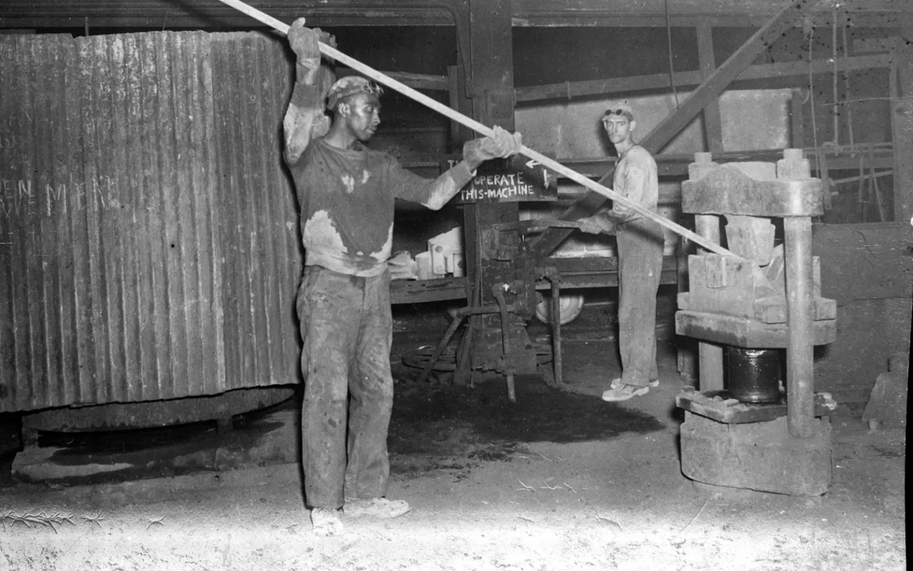

African American labor organizing and its methods and effects, focused on the Ohio River Valley
Historiography:
"An Incident at the Statler Hotel: A Black Pittsburgh Teamster Demands Fair Treatment During the Second World War"
David Witwer in Pennsylvania History: A Journal of Mid-Atlantic Studies 65, no. 3 (Summer 1998): 350–67. View on JSTOR
"This Great Crusade: Reformers and the Industrial Labor Movement, 1933–1939."
Adam Lee Cilli in Canaan, Dim and Far: Black Reformers and the Pursuit of Citizenship in Pittsburgh, 1915–1945 (Athens, GA: University of Georgia Press, 2021), 168–204. More Information

A worker bending a metal bar into a hook for various tasks at a steel mill. Source